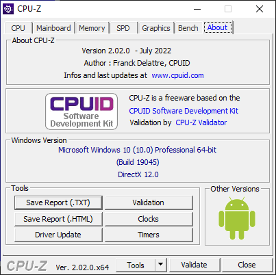
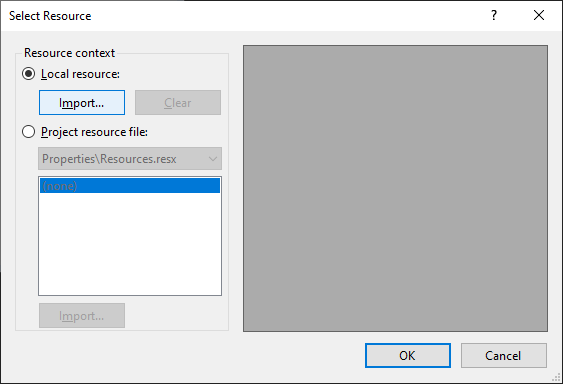
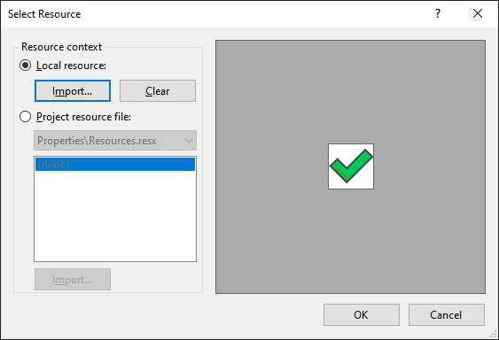
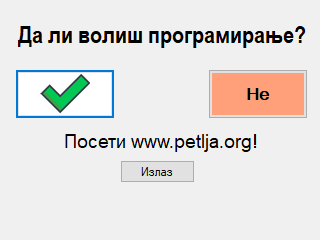
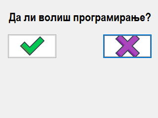

Дугме¶
Контрола дугме (енгл. Button) дефинисана је у класи Button која се налази у
именском простору System.Windows.Forms, односно склопу
System.Windows.Forms.dll. Класа Button наслеђује класу ButtonBase која
наслеђује класу Control, па због тога дугме има основна својства, догађаје и
методе као и остале контроле у Windows Forms App пројектима.
Детаљан опис својстава, догађаја и метода класе Button налази се у званичној
документацији.
Има их много и нема потребе наводити их све на овом месту.
Дугме представља једну од основних контрола у десктоп апликацијама. Можеш га користити за обављање многих радњи у складу са захтевима. Својствима дугмета можеш детаљно дефинисати изглед и положај дугмета на форми. Неке од основних својстава дугмета која ћеш често користити су:
Text. Одређује текст у контроли.TextAlign. Одређује поравнање текста унутар контроле.Enabled. Одређује да ли је дугме омогућено за интеракцију.BackColorиForeColor. Одређује боју текста и боју позадине текста.FlatStyle. Одређује визуелни стил приказа дугмета.
Дугме учествује у редоследу картица (енгл. TAB order) у којем добија свој
индекс (TabIndex) и фокус (TabStop), па према томе, дугме може да се кликне
мишем, а ако је у фокусу, тастерима ENTER и SPACE.
Најчешћи догађај дугмета је догађај клика мишем Click, а доступни су и сви
остали догађаји. Пример коришћења дугмета на форми може бити апликација из
претходне лекције…

…где је у четвртом оквиру за групу постављено шест дугмади, а дугмад су постављена и у доњем десном углу апликације.
Нека је задатак да креираш Windows Forms Apps (.NET Framework) пројекат са једном формом димензија 320×240 која нема оквире нити дугмад Minimize, Maximize и Close у горњем десном углу. На форму треба да поставиш:
једну лабелу са текстом Да ли волиш програмирање?
једно дугме са текстом Да и
једно дугме са текстом Не.
Положај, величину, изглед и визуелни стил приказа дугмади одреди сам. Кликом
на дугме Да у дну треба да се прикаже лабела са текстом
Посети www.petlja.org! и дугме са текстом Затвори. Кликом на дугме
Не треба да искочи порука са текстом Погрешан одговор!, а кликом на
приказано дугме са текстом Затвори, апликација треба да се затвори.
Креирање и постављање својстава дугмади дизајнером¶
Форма са иницијално постављеним контролама може да изгледа на пример овако:

Обрати пажњу да је на слици у фокусу прво дугме, јер је његов TabIndex
постављен на 1. Притиском на тастер TAB на тастатури фокус прелази на друго
дугме чији је TabIndex постављен на 2. Пошто апликација нема дугме Close
у горњем десном углу, можеш је затворити комбинацијом тастера ALT и F4.
Постави испод и лабелу са текстом Посети www.petlja.org! и дугме са
текстом Затвори, па њихова својства Visible постави на False.
Кликом на прво дугме потребно је да прикажеш постављену лабелу и дугме.
private void btnDa_Click(object sender, EventArgs e)
{
lblPosetiPetlju.Visible = True;
btnIzlaz.Visible = True;
}
Сада ће апликација изгледати овако након клика на прво дугме:

На крају, потребно је да дефинишеш догађај клика на дугме са текстом Затвори…
private void BtnIzlaz_Click(object sender, EventArgs e)
{
Application.Exit();
}
…и да реализујеш испис поруке са текстом Погрешан одговор! када се кликне на дугме Не:
private void btnNe_Click(object sender, EventArgs e)
{
MessageBox.Show("Погрешан одговор!");
}
На контроли Button уместо текста можеш да прикажеш слику користећи својсво
Image. Потребно је да кликнеш на дугме, па у својсву Image кликнеш на
три тачке .... Слику можеш да одабереш из фајла или из ресурса.
Нека је задатак да текст Да и Не заменим сликама:
Кликни на прво дугме, обриши текст из својства Text, својство BackColor
постави на White, па у својству Image кликни на три тачке ....
!
Одабери Local Resource, па кликни на Import и одабери слику da.png и
кликни OK.

Сада је дугме потпуно променило изглед:

Исто уради и за друго дугме:

Слика на дугмету може бити постављена и путем својства BackgroundImage, где
се касније својством BackgroundImageLayout може дефинисати распоред
приказивања позадинске слике:
Tile: поплочај,Stetch: развуци,Center: центрирај иZoom: развуци пропорционално.